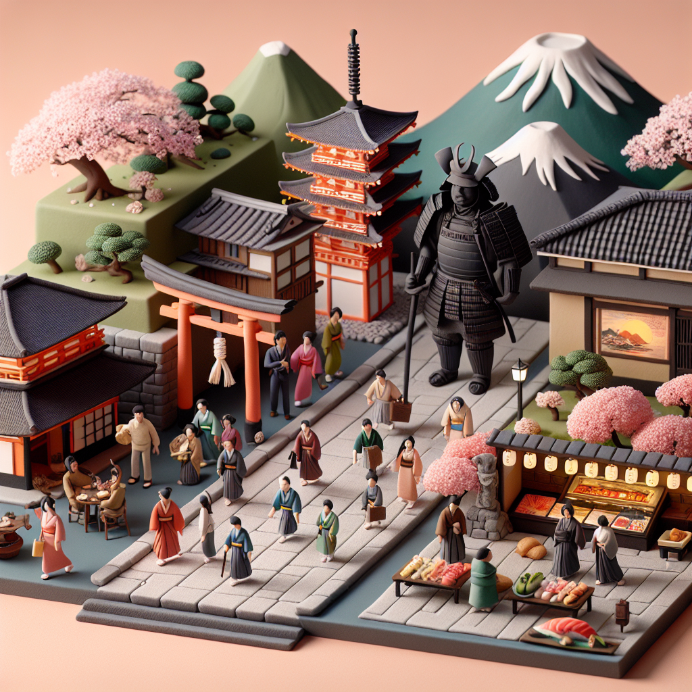

Why Japan is Friggin Awesome!
Japan is a country of many wonders. From its ancient culture to its delicious food, there is so much to love about Japan. The people of Japan are some of the most welcoming and gracious people in the world. They are always eager to show visitors around and make sure everyone has an amazing experience. Japan is also known for its cutting-edge technology, creating some of the most innovative products in the world.
Japan also has some of the best scenery in the world. From its majestic mountains to its breathtaking beaches, Japan is home to some of the most beautiful landscapes on Earth. Whether you’re visiting for a day or a month, you’ll never get tired of the breathtaking views.
Of course, let’s not forget about the food. Japanese cuisine is some of the most delicious and unique in the world. From sushi to ramen, there’s something for everyone to enjoy. And if you’re looking for something sweet, Japan has plenty of desserts to choose from.
All in all, Japan is an amazing place to visit and explore. With its rich culture, stunning scenery, and delicious food, there’s no better place to experience the best of Japan. So why not give it a try? You won’t regret it.